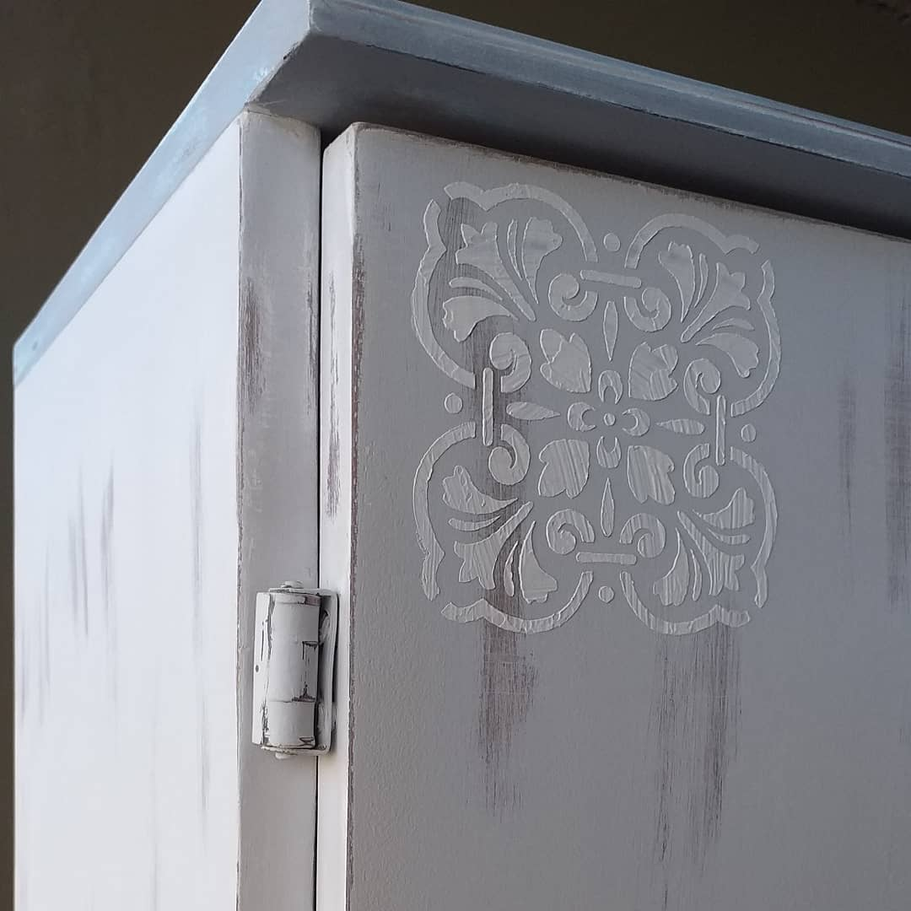

Decapado
Lo que logramos con el Decapado es simular el paso de los años en la pintura de un mueble u otro objeto. Al decapar un mueble se quita parte de la capa de pintura existente con una lija, para que se vea la capa anterior o directamente la madera.

Decoupage
Con el Decoupage lo que hacemos es decorar con imágenes de papel o de telas recortadas y que son fijadas a la superficie que se quiera decorar con un barniz. El resultado final tiene que ser muy similar a como si lo hubiéramos hecho con pintura y un pincel.

Barnizado
Con esta tecnica lo que hacemos es embellecer y revivir la madera, el barniz le aporta resistencia fisica y quimica.

Decoracion
Utilizamos distintos materiales con el fin de conseguir un diseño unico, algunos de los materiales que usamos son: acrilicos, sinteticos, pasta de modelar, etc..
